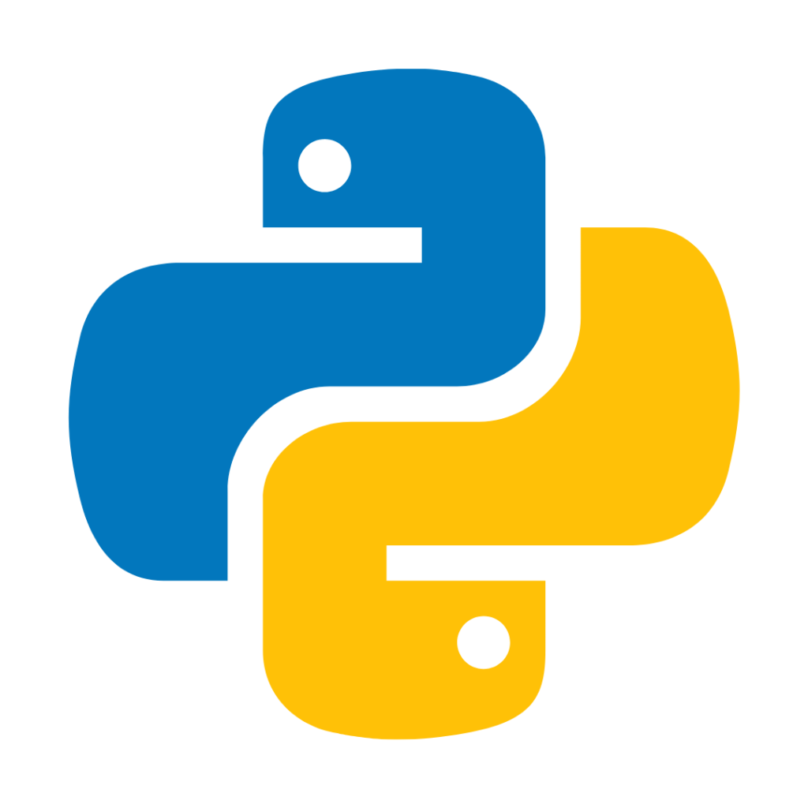

Our group has made several discoveries doing this project, related to Python functions and how they work primarily, but also about its main features, applications; as well as about CCS and JavaScript.

While constructing this website we have learned how to create different designs, how to create a side bar tool, with different sections, each of one leading to a different website but nevertheless all interconnected between each other.
The syntax is where the differences between JavaScript and Python. For instance, when we want to declare a variable named 'string', in JavaScript, we need to input 'var string', whereas, in Python simply type the word 'string'.
The syntax is also different between two codes when they try to analyze whether the user input is a number or not. From the example above, JavaScript uses isNaN() to test if the input value is a number, but Python use 'int()'' to execute the same function.
For loop is one of the most commonly use function in both JavaScript and Python. The concept of a 'for loop' is generally the same, but the syntax is where the differences arise. In JavaScript, a for loop contains three parts separated by semicolons: an initialization, a continuation condition, and an increment statement. three different parts have different roles. The initialization section will be run once for each loop. The continuation condition will be checked at each iteration and it will continue if the condition is met. Finally, the increment statement will increment i by one at the end of each iteration. On the other hand, the syntax for writing a for-loop function is different in python as we can see from the code above. 'For i in range (n)', it means that the for loop will produce a sequence of integers for iteration until the condition is satisfied.
The syntax for user input also differs in JavaScript and Python. In JavaScript, 'Prompt' is used to ask the user to input what they want. Unlike JavaScript, python uses 'input' to request the user to input words.
When it comes to string management, Even though the syntax for joining different strings together is the same, the way in which JavaScript and Python invert the string is different. For instance, JavaScript uses 'reverse {}' to reverse an array of characters, as shown above, whereas, the Python uses slice notation '[::-1]' to invert a string, which will start at the end of the string and goes backward by one character.
Therefore, it can be concluded even though there are some similarities between JavaScript and Python in terms of programming concepts. The syntax for the execution of a program varies. Due to the differences in the rules or purpose of the code. So, it is crucial to understand and beware of the syntax discrepancies when programmers are switching between different programming languages.
| Name | ID |
|---|---|
| Eva Nieto Peña | 40143202 |
| Matthew David Betty | 55777637 |
| Fong Yin Hung | 56904026 |